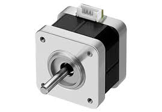

#include Adafruit_NeoPixel.h
// モーター用
const int DIR = 8;
const int STEP = 9;
// NeoPixel用（ピン変更！）
#define LED_PIN 6
#define NUMPIXELS 5
// 明るさセンサー
const int CDS_PIN = A1;
// しきい値（ここで明るい/暗いを判定）
int threshold = 300;
Adafruit_NeoPixel pixels(NUMPIXELS, LED_PIN, NEO_GRB + NEO_KHZ800);
void setup() {
// モーター
pinMode(DIR, OUTPUT);
pinMode(STEP, OUTPUT);
// LED
pixels.begin();
pixels.setBrightness(50);
// シリアル（デバッグ用）
Serial.begin(9600);
}
void loop() {
int val = analogRead(CDS_PIN);
Serial.println(val);
if (val < threshold) {
// 明るい → モーター回転
pixels.clear();
pixels.show();
for (int i = 0; i < 360; i++) {
clockwise(800);
}
} else {
// 暗い → LED点灯
digitalWrite(STEP, LOW);
pixels.clear();
for (int i = 0; i < NUMPIXELS; i++) {
pixels.setPixelColor(i, pixels.Color(0, 0, 255)); // 青
}
pixels.show();
}
delay(0);
}
// モーター関数
void clockwise(int delaytime) {
digitalWrite(DIR, HIGH);
digitalWrite(STEP, HIGH);
delayMicroseconds(delaytime);
digitalWrite(STEP, LOW);
delayMicroseconds(delaytime);
}